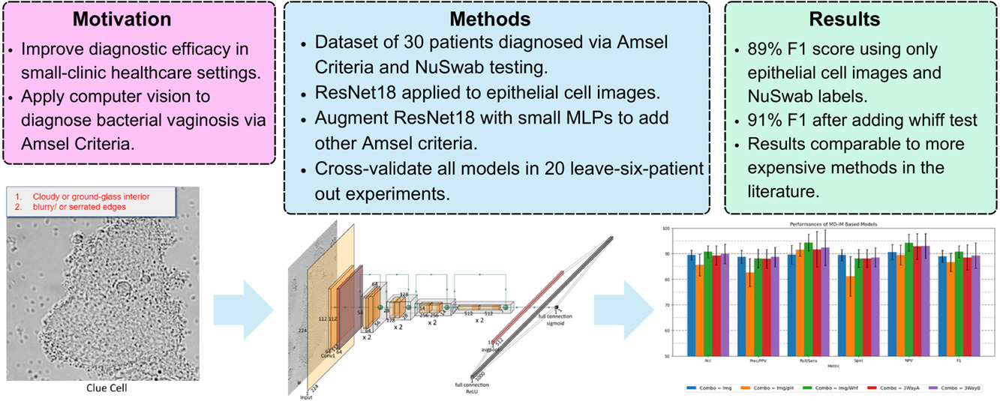
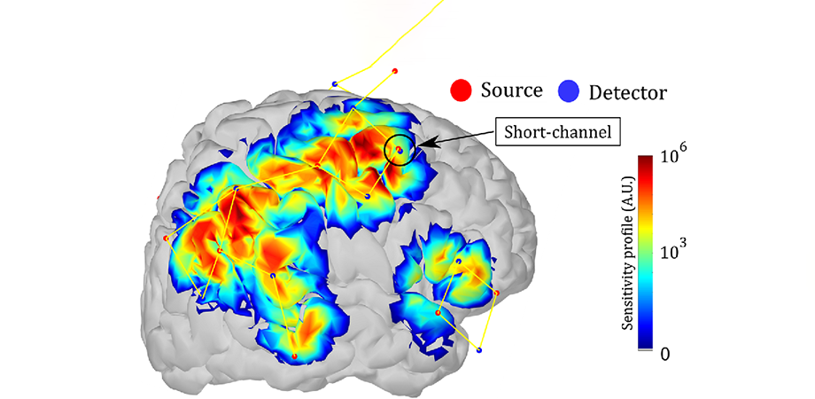

Hi, I'm Daniel Highland.
Self-driven, creative, and flexible applied spectroscopist with a chemistry and computer science background who enjoys research in a healthcare context.
About
I am a research associate at FHI 360's Product Quality and Compliance (PQC) department studying methods to streamline analysis of finished pharmaceutical products in global health supply chains. I have worked in Python and R to create software tools and data visualizations and to provide insights into spectroscopic data. I graduated from William & Mary in 2023 with a M.S. in Computer Science, where I researched deep learning/computer vision applications to medical diagnostics. I care deeply about improving access to care using chemical and algorithmic insights.
- Languages: Python, R
- Libraries: NumPy, Pandas, OpenCV, PyTorch, Shiny
Experience
- Conducts research on methods to enable low- —and middle-income countries to adopt handheld Near-Infrared (NIR) Spectrometers for finished pharmaceutical product (FPP) quality control.
- Topics include spectrometer-to-spectrometer calibration transfer techniques, methods to address environmental artifacts in NIR spectra, and software solutions (Python, R, and Shiny) for efficient spectral processing and analysis.
- Created and maintains training manuals and videos on handheld NIR spectra collection and FPP quality assessment intended for non-expert audiences.
- Performed live demonstrations of spectroscopy techniques to teach methods to external parties and illustrate protocols during audits.
- Tools: Python, R, Shiny
- Techniques and Methods: Near Infrared (NIR) Spectroscopy (Handheld and Benchtop), 2D-Correlation Spectroscopy, PCA, SNV, Savitsky-Golay Filtering, MSC, Mahalanobis Distances
- Conducted research on applications of deep learning models in healthcare contexts, including original reserach and review papers.
- Primary author on manuscripts and handled the journal submission process.
- Tools and Libraries: Python, PyTorch, NumPy, PIL
- Topics: Deep Learning, Computer Vision, Bacterial Vaginosis, Mood Disorders
- Conducted research on Surface Enhanced Raman Spectroscopy (SERS) approaches to pH detection with rhodamine-based dyes for cancer cell identification.
- Trained new lab members in SERS methods/safety and in instrument problem solving.
- Presented and promoted lab projects in campus poster sessions.
- Techniques: Surface Enhanced Raman Spectroscopy (SERS)
Publications
-

- Paper Link
- Dataset Link
- Tools: Python, PyTorch, PIL, Bash
-

- Paper Link
- Covered Techniques: fNIRs, fMRI, GPS, Accelerometers, Microphones, Cameras, Software-interfacing
Posters
- Techniques: Handheld NIR Spectroscopy, Mahalanobis Distances, PCA
- Techniques: Handheld and Benchtop NIR Spectroscopy, MCR, 2D Correlation Spectroscopy
Toy Projects

d3.js project playing with data visualizations
- Tools: HTML, CSS, JavaScript, d3.js
- Plays around with dynamically updating chloropleths, bar charts, and scatter plots
- Allows easy exploration of three different US datasets: Health, Economics, Politics
- Enables quick analysis of data trends (though I would recommend caution when interpretting correlations)

Skills
Languages
Libraries
Spectroscopy
Education
Williamsburg, VA
Degree: Master of Science in Computer Science
CGPA: 3.66/4.0
- Deep Representation Learning
- Ubiquitous & Mobile Computing
- Analysis of Algorithms
- Data Analysis and Simulation
- Data Visualization
- Design of Experiments
Relevant Coursework:
Williamsburg, VA
Degree: Bachelor of Science in Chemistry; Minor in Data Science
CGPA: 3.89/4.0
- Organic Spectroscopy
- Computational Chemistry
- Biochemistry
- Instrumental Analysis
- Intro to Mathematical Physics
- Ethics and Data Science
Relevant Coursework: